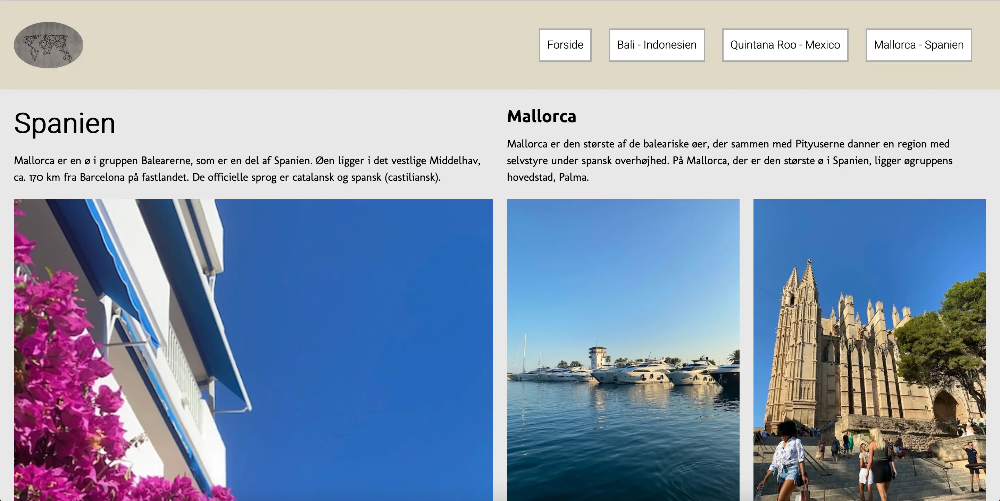

På tema 2 - grundlæggende web - blev vi introduceret til moodboards, skitsering, styletile, mock-ups samt fonte og tekstopsætning. Alt dette skulle vi bruge som hjælpemidler til kodningen af vores hjemmeside. Herefter skulle vi igang med Visual Studio Code. Her arbejdede vi meget med css grid, flex og media queries. Vi startede ud med nogle forskellige grid-layout-øvelser, så vi fik en grundforståelse inden vi skulle kode vores eget site. Vi fik en forståelse for vigtigheden af et responsivt design og validering af både css og html. Derudover vigtigheden af en struktureret og god mappestruktur. Vi gennemgik ophavsret og rettighedslicenser og vigtigheden af dette.
Vi skulle på tema 2 også lave en studiestartsprøve, for at kunne fortsætte på 1. semester. Denne opgave skulle vi lave udfra nogle wireframes, samt layoutdiagrammer vi fik udleveret i undervisningen. Sitet skulle selvfølgelig validere. Derudover skulle vi indsætte meta-tag, så sitet ikke kunne findes af sødemaskiner.
Vi skulle producere og designe vores helt eget site, om et valgfrit emne. Jeg valgte at lave mit site om rejsedestinationer. Her havde jeg allerede en masse billedmateriale, så jeg var sikker på, at jeg havde fuld rettighed til at bruge billederne. Vi arbejdede med vores emnesite over 2 uger. Processen startede med at vi lavede moodboard og styletile, som kan ses nedenfor. Efterfølgende kunne vi begynde at finde billedmateriale. Her brugte vi Photoshop til billedbehandling, såsom beskæring, størrelser, farver m.m.. Herefter kunne vi begynde at kode vores website med HTML og CSS. Vi benyttede css grid, flex, col og media queries, så vores site fik et flot og responsivt udseende. Her arbejdede vi også en del med "mobil first" tilgang. Mit site fik også et favicon og en burgermenu, som en del af kodningen. Til sidst i forløbet fik vi mundtlig feedback i studiegrupper.
Moodboard er en slags collage med forskelligt materiale. Kan være billeder, farver, fonte, genstande m.m.. På tema 2 brugte jeg det til at formidle hvilke forskellige ide jeg havde til mit emnesite. Man kan lave mange forskellige moodboards før man udvikler sit site.

Styletile består blandt andet af farver, fonte, billeder, knapper og andre ellementer man vil bruge på sit site. Bruges til at udtrykke hvilket design og udtryk man ønsker på sit site. Jeg ville beskrive det som en udvidelse af moodboard.

Wireframes er en visuel guide eller plan for sitet. Det repræsenterer en skelletstruktur af sitet. Jeg har lavet wireframes for alle 4 sider. Her kan man både se strukturen for mobilsite og computersite.

Funktionelt design. Jeg har brugt meget få ellementer og farver på mit site. Stort set kun sort tekst og et meget harmonisk layout og udtryk. Har brugt grids til orden og struktur på mit site. Besøg website her
